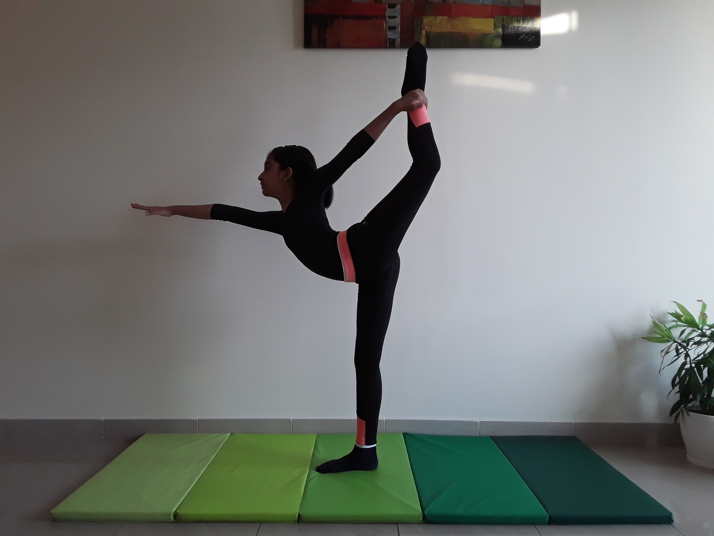

STANDING BOW POSE

Steps to perform Standing Bow Pose
- Begin standing with your feet together and parallel, your arms relaxed at your sides with palms facing forward.
- Release your left arm in front of you, then grasp the top of your right foot with your right hand.
- Lift your left arm directly up, maintaining the rest of your posture.
- On an exhale, extend your right leg back and up with toes pointed. Your torso will naturally lean forward for balance, and your right leg should stay slightly bent.
- Slowly lower your body until your chest and abdomen are nearly parallel to the floor and your right foot moves toward over the center of your head. Repeat on the other side.